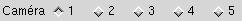
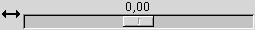

| Bouton du centre |
|
| |
Actif: l'aperçu est mis à
jour lors de chaque modification du relief. Inactif: Il faut cliquer "Rafraîchir" pour mettre à jour l'aperçu Désactivez cette case lorsque l'interface réagit trop lentement. Par exemple: (1) Vous éditez une image plus grande que ce que la puissance de votre ordinateur peut supporter, en assurant la fluidité des traitements. (2) Vous avez trop augmenté le niveau de détail de l'aperçu |
|||||||||||||||||||||||||||||||||
| |
Cliquez pour rafraîchir l'aperçu,
soit lorsque la case "MAJ Auto" est désactivée, soit
lorsque l'aperçu n'apparaît pas, lorsque vous naviguez
entre plusieurs documents (voir la FAQ). |
|||||||||||||||||||||||||||||||||
| |
Modifie la grandeur de la zone d'aperçu,
par incrément de 32 pixels. La largeur de la zone va de 64
à 512 pixels. La largeur par défaut est de 128 ou 256
pixels. Elle est calculée au démarrage de Geomorph selon
la grandeur de votre bureau. La hauteur est de 0,75 fois la largeur (le
format de l'image est de 4/3, comme les rendus des scènes Povray
fournies avec Geomorph). |
|||||||||||||||||||||||||||||||||
| |
Indique le nombre de sommets (vertices)
considérés dans la transformation de l'image en
triangles,
relativement au nombre de pixels. Ainsi, avec la valeur par
défaut
de 25%, une image de 512x512 pixels sera représentée par
128x128 sommets. Les valeurs varient du simple au double à
chaque
clic: 6,25%, 12,5%, 25%, 50%, 100%. La valeur par défaut de 25% assure une utilisation fluide avec le matériel recommandé (un processeur de ~1000 Mhz pour une image de 512x512, sans accélération matérielle OpenGL). |
|||||||||||||||||||||||||||||||||
|  |
Gestion des caméras. Cliquez sur le bouton radio approprié pour remplacer la caméra active. Une caméra regroupe les paramètres de rotation, de déplacement et d'angle. Les 5 caméras sont sauvegardées avec l'image de relief, dans la zone de commentaires du fichier PNG. L'édition de l'image de relief avec un autre outil risque de les effacer. Voir la section des conseils pour ne pas perdre les caméras dans ce cas. L'initialisation des caméras se fait à partir du dernier document affiché, ou si ce n'est pas possible à partir des valeurs par défaut de Geomorph. Après l'initialisation, chaque document conserve ses propres caméras. Une modification du point de vue dans un document n'a pas d'effet sur les autres. |
|||||||||||||||||||||||||||||||||
| Angle de rotation autour de l'axe vertical (Y),
de 0° à 360°. |
||||||||||||||||||||||||||||||||||
| Angle de rotation autour de l'axe Ouest-Est (X),
ou inclinaison avant-arrière, de 0° à 360°. Lorsque l'ange de la prise de vue est à 60°, la ligne d'horizon apparaît à 22° ou moins, et une inclinaison de 6° donne un horizon aux 2/3 de l'image. Note: l'aperçu n'offre pas de rotation autour de l'axe Z. Cela donnerait une ligne d'horizon penchée. |
||||||||||||||||||||||||||||||||||
| Distance relative entre l'observateur et le
relief. À 0, l'observateur se trouve au centre du relief. |
||||||||||||||||||||||||||||||||||
| |
Déplacement vertical du relief, de -Y
à +Y. |
|||||||||||||||||||||||||||||||||
|  |
Déplacement latéral du relief, de
-X à +X. |
|||||||||||||||||||||||||||||||||
| |
Angle de vision horizontal, de 5° à
100°, correspondant à la convention Povray. En photographie,
l'angle de vision donné d'après la longueur focale de
l'objectif est généralement diagonal. Voici une table
d'équivalences pour quelques longueurs focales courantes:
|
|||||||||||||||||||||||||||||||||
| |
Ce bouton réaffiche les réglages
de caméra par défaut de Geomorph, pour la caméra
courante seulement. |
Il est parfois difficile de régler de façon fine les échelles de distance ou de rotation. Par exemple, l'inclinaison avant-arrière s'exprime souvent en angles de l'ordre de 0° à 10°. En cliquant sur le curseur de l'échelle, puis en déplaçant le curseur à l'aide des flèches gauche - droite du clavier, vous obtiendrez un contrôle fin par sauts de 1°.
Une inclinaison de la caméra de 6° donne une ligne d'horizon aux deux tiers de l'image (1/3 de ciel, 2/3 de sol). Vous voudrez parfois montrer deux tiers de ciel, par exemple lorsque les nuages sont un centre d'intérêt. Utilisez alors une inclinaison située entre 350 et 355°, et déplacez la caméra vers le haut (le relief vers le bas). Un exemple: une rotation X de 352°, un déplacement Y de -0,31.
Si le calcul de l'aperçu ralentit trop l'interface, diminuez le niveau de détail, ou bien désactivez la mise à jour automatique.
Geomorph n'offre pas encore, avec la version 0.12, une sauvegarde des paramètres de caméra au niveau de la session. Cependant, s'il y a des caméras que vous aimeriez toujours utiliser pour vos nouveaux documents, sauvegardez-les dans un document que vous ouvrirez toujours au début d'une session Geomorph. Les caméras du dernier fichier ouvert sont réutilisées lors de la création des nouveaux documents.
Vous voudrez peut-être éditer vos fichiers PNG avec Gimp, ou mieux, pour conserver le détail des altitudes sur 16 bits, avec Filmgimp/Cinepaint. Les caméras sont sauvegardées dans la zone de commentaires du fichier PNG. Cette zone n'est pas conservée par les autres logiciels. Pour éditer le fichier avec un logiciel externe et conserver malgré tout ces caméras, vous pouvez procéder ainsi:
- Copier le fichier sous un autre nom
- Éditer le fichier d'origine avec l'autre logiciel.
- Au retour dans Geomorph, ouvrir d'abord la copie non éditée. Geomorph initialisera les 5 caméras de l'aperçu avec les définitions trouvées dans le fichier.
- Ouvrir le document modifié. Comme Geomorph n'y trouvera aucune définition de caméra, il réutilisera celles qu'il a trouvées dans la copie.
On peut se demander pourquoi offrir une échelle de variation de l'angle de vision, alors qu'il est possible de s'éloigner ou de s'approcher du relief si on veut en diminuer ou en augmenter la grandeur relative.Retour au début
C'est une question de perspective. Supposons que vous définissez deux caméras, braquées sur une colline à l'avant-plan. Une caméra a un angle réduit (c'est un téléobjectif), l'autre un grand angle. Vous approchez la caméra à l'angle élevé et éloignez le téléobjectif pour que la colline à l'avant-plan soit de la même grandeur apparente. Les collines à l'arrière-plan paraîtront alors beacoup plus petites avec la caméra grand angle qu'avec la caméra téléobjectif.
Le grand angle donne un effet de profondeur, d'éloignement, tandis que le téléobjectif donne un effet d'écrasement des différents plans.
D'une façon générale, les montagnes semblent plus élevée lorsque vues à l'aide d'un téléobjectif, parce qu'elles occupent une plus grande surface de l'image.
L'utilisation du grand angle pour obtenir un effet de profondeur requiert habituellement de s'approcher considérablement des objets. Cette proximité peut donner l'impression d'un manque de détail de l'image de relief, ou pire, on peut à la limite voir les triangles qui composent la surface. Une façon de minimiser cet effet est d'utiliser une texture Povray riche, qui, en particulier, modifie les normales.
 Retour à l'index de la
documentation
Retour à l'index de la
documentation